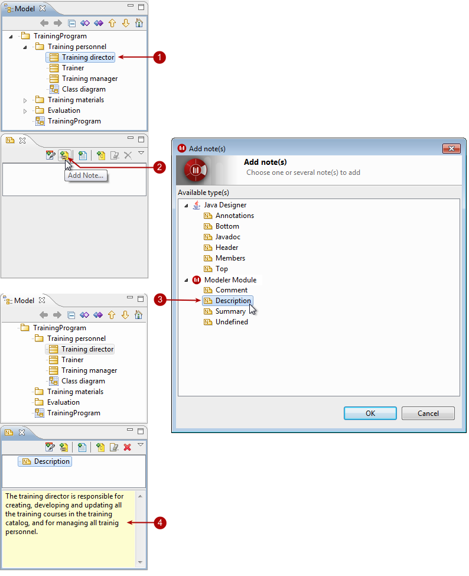
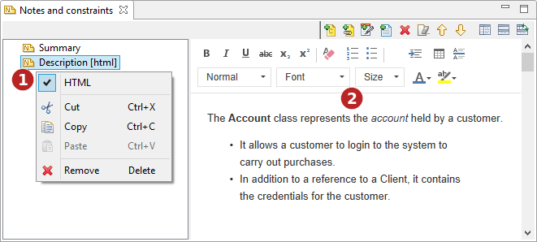

There are two ways to add notes or constraints to elements:
Using the “Create a note” or “Create a constraint” button in the diagram palette.
Using the “Notes and constraints” view on the concerned element.

Steps:
Select the element you want to add a note to.
In the “Notes and constraints” view, click on the “Add a note” icon.
In the “Add note(s)” window, select the type of note(s) you want to add and click OK.
The new note then appears, and you can enter its contents in the dedicated zone.

Steps:
Select the MIME type of the note.
Use the HTML editor.